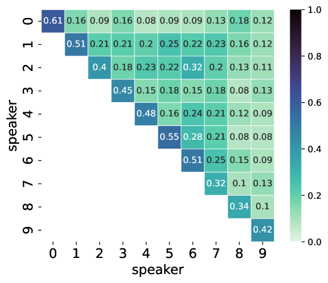

13. Benchmark Saturation (2026.04.13)
| MeetingPaper 1 |
Z. Last Meeting Summary
- Gen vs Gen Similarity Benchmark가 이전에 제시된 적이 있는 지 확인할 것
- 연구의 의미와 계속 진행할 지에 대한 여부 결정할 것
- AI 챔피언 제안서 제출
- KCC 논문 제출
P.S. 감정 태그 모델
SOTA 모델 (Fish Audio)
 https://fish.audio/
https://fish.audio/
P.S. Full-duplex 모델
KRAFTON Raon
- Raon SpeechChat 모델은 Qwen-Ommi 모델 아키텍처를 베이스로 제작됨 (Thinker-Talker 구조)
- Nvidia PersonaPlex와는 다른 구조
- Thinker-Talker 구조의 경우 ASR을 사용하던 이전 기술과는 달리 모델이 생성 과정에 계속 인풋을 받을 수 있는 것은 맞으나, 구조적으로
사용자의 입력 중 무시해도 될 것은 무시한다의 컨셉에 더 가까움- 사용자의 입력 중 무시하면 안되는 지점에 하던 생성을 중단하고 다시 시작하는 것
- PersonaPlex는 1차원으로 전사하여 어텐션되는 구조이기 때문에, 생성하면서 실제로 듣고 있는 형태
- Thinker-Talker 구조는 사용자가 말하는 것을 Talker가 듣고 있는 느낌은 아니지만, 대신 Tool Calling을 LLM들처럼 지원 가능
- 공통 한계로 현재 Full-duplex 모델들은 매우 짧은 생성 길이 제한을 가지고 있음
A. 기존 연구 확인
A.1. 벤치마크 측면
기존 논문들의 SIM 수치는 Ref vs Gen인가 아니면 Gen vs Gen인가?
- 일단 교수님께서 공유해주신 논문은 전부 Ref vs Gen인 것으로 확인
- 가장 처음 보고: (2018) Transfer Learning from Speaker Verification to Multispeaker Text-To-Speech Synthesis (NeurIPS)
방법:
- 같은 화자 임베딩으로 여러 발화 생성
- Demo 페이지에서 시각적으로 비교 제시
- Table 4에서 self-similarity 측정 - 서로 다른 화자에 대해 합성된 오디오의 자연성 MOS 분산 비교 arXiv
- "self-similarity"라는 용어 사용
핵심:
- 데모에서 같은 화자로 여러 문장 생성하여 일관성 시연
- Table 4에서 VCTK가 naturalness와 self-similarity 측면에서 일관성 있음을 보고
- Bark 평가 연구: (2024) Evaluating Text-to-Speech Synthesis from a Large Discrete Token-based Speech Language Model
- 가장 명시적인 사례
- Bark의 화자 일관성을 조사하기 위해, 동일 화자로부터 샘플링된 여러 출력 간 화자 유사도 점수를 ECAPA-TDNN 모델로 측정
- Confusion matrix 분석: 같은 화자로 생성된 샘플들 간 유사도를 행렬로 표현

- 발견: Bark는 "speaker drift" 문제가 있음 - 동일 화자 ID로 생성했음에도 서로 다른 화자처럼 들림
- E2 TTS 논문: (2025) Harnessing text-to-speech voice cloning models for improved audiological speech assessment (Shahidi et al., Interspeech 2025)
- 방법: Model Consistency - 같은 모델로 생성된 샘플들 간 "same speaker" 판단
- 발견: E2 > XTTSv2 > VALL-E X 순으로 일관성 높음
- 핵심: 명시적으로 "consistency in the speaker characteristics generated by each model" 측정
정리하면, 계속 측정은 되고 있으나 논문에서는 크게 관심이 없음
다만, 실무적인 측면에서는 Qwen3 TTS나 Parler TTS 모델의 깃허브 레포에 이슈가 올라오는 등 필요성 존재
• Parler-TTS Issue #11: "similar but still not the same voices each generation"
A.2. 학습 모델 측면
명시적으로 같은 화자에 대해 Content를 달리하여 Consistency Loss를 도입하는 학습 방법론 조사
Speaker Consistency Loss (SCL) 계열
- YourTTS (2022) - ICML
- 사전 학습된 화자 인코더를 사용하여 생성된 오디오와 ground truth에서 화자 임베딩을 추출하여 Speaker Consistency Loss를 최종 손실에 사용
- 한계:
- Ref vs Gen 방식 - 여전히 reference와 비교
- Cross-content consistency는 측정 안 함
- 학습 시에만 사용, 평가 프로토콜 아님
- CosyVoice2 (2024)
- FSQ 양자화와 ASR 손실 정규화를 결합하여 zero-shot 및 code-switching 시나리오에서 content-speaker 일관성 보존
- 방법:
- ASR loss로 content 보존
- FSQ로 speaker 보존
- 하지만 여전히 single reference 기반
A.3. Benchmark Saturation 주장
- Ref vs Gen Sim 벤치가 90을 넘기 시작한 것은 그래도 비교적 최근
- Ref vs Gen Sim으로는 90을 넘지만, Gen vs Gen Sim 수치는 낮게 나온다는 것을 보임으로써 Benchmark Saturation을 주장한다면 인공지능의 발전 과정으로 봤을 때 말이 되는 흐름
- 우리가 발견한 것이라고 주장하기는 조금 힘들게 된거긴 하지만,
- 이미 리포트가 된 사례들이 있으므로 오히려 Saturation을 주장하면 더 make sense할 것
B. 이 연구로 가져가려고 하는 가치
B.1. 그 동안 자세하게 말씀드리지 못한 부분
시간상, 그리고 교수님이 어떻게 생각하실지 모른다는 불안감
계속해서 논문 주체를 하나로 잡고 있지 않고 있었음
B.1.1. 2025.12.29일 미팅 기록
- 논문 1: 화자 일관성 문제 발견 보고 + 간단한 Selective Tuning(토큰 튜닝)을 통한 성능 향상 시도
- 성능 향상 기준은 Style Prompt 모델의 일관성이 Voice Cloning 모델에 도달하도록
- 논문 2: Convertive Tuning 등을 이용하여 Voice Cloning의 방법론으로 스타일 프롬프팅을 통합하여 일관성 확보
- 논문 3: Hypernetwork LoRA Generation을 이용하여 Voice Editing 지원
이는 서로 다른 주제에 대해 다루는 내용이기 때문에 분리하는 것이 필요하다고 생각하고 있었음
B.2. 최근 생각 변화
생각보다 발견한 문제에 대한 원인 분석이 쉽지 않음
확실한 지표 확인을 위해 데이터셋까지 수정해야 하다보니 기여가 꼬이고, 일이 너무 많아지고 시간이 지체됨
재구성 필요
- 논문 1: Benchmark Saturation and Initial Solution (Contrastive + TTA)
- 요약: 벤치마크 포화 보고 및 간단한 성능 향상 방식 제안
- 설명:
- 벤치마크 포화를 주장하면서 새 벤치에 대한 기존 모델별 성능 변화(하락) 보고
- 간단한 해결책(Consistency loss)으로 약간의 성능을 올릴 수 있는 방향을 제시한 채로 마무리
- 파인 튜닝으로 특정 화자에 대해 Consistency를 올리게 되면 결국 새로운 화자 프롬프트가 들어오는 경우 다시 성능 하락이 발생할 수 있을 것으로 생각됨
- TTA로 파인 튜닝 단계를 런타임에도 수행해서 보고
- 이슈 사항:
- Persona Prompt라는 새로운 이름을 도입하는 것이 리뷰어에게 부정적으로 보일 수 있음
- 먼저, 태스크에 대한 명칭부터 확실하게 잡을 필요가 있음
- 기존에 Style Prompting 모델이라고 부르던 명칭을 수정해야 함
- 최근 Qwen-TTS가 태스크를 일관성 있게 정리함
# 태스트 정립 (현대적 해석) 1. Voice Customizing: 학습 데이터셋에서 학습한 Voice에 대한 스타일 제어 2. Voice Cloning: 레퍼런스 오디오를 통한 Voice 복제 3. Voice Designing: 프롬프트를 통해 Voice를 생성 --- 여기까지가 Qwen --- 4. Voice Editing: 비전 분야에서처럼 모든 태스크를 통합하고, 참조에 대한 수정까지 지원
- 논란을 만들 필요는 없으므로 Voice Prompt 라는 표현으로 변경
# 프롬프트 종류 1. Voice Prompt/Description (Voice Profile, Persona) 2. Speaker Prompt/Description 3. Style Prompt/Description 4. Content Prompt/Description
- 먼저, 태스크에 대한 명칭부터 확실하게 잡을 필요가 있음
- Instruct Following을 측정할 방법이 없었음
- SOANL-D, SONAL-E는 보조 벤치마크에 불과하며, 실제로 의미가 있는지도 확실하게 검토해봐야 함
- Emergent TTS와 비슷한 InstructTTSEval 벤치 존재
- InstructTTSEval: Benchmarking Complex Natural-Language Instruction Following in Text-to-Speech SystemsGitHub - KexinHUANG19/InstructTTSEvalContribute to KexinHUANG19/InstructTTSEval development by creating an account on GitHub.
 https://github.com/KexinHUANG19/InstructTTSEval
https://github.com/KexinHUANG19/InstructTTSEval
- InstructTTSEval: Benchmarking Complex Natural-Language Instruction Following in Text-to-Speech Systems
- Persona Prompt라는 새로운 이름을 도입하는 것이 리뷰어에게 부정적으로 보일 수 있음


{kind=link}
- 논문 2: Voice Design Consistency
- 요약: 보이스 디자인 태스크의 일관성 지표 향상을 위한 노력
- 전개 과정:
- Selective Tuning (토큰 튜닝)을 통해 보이스 디자인 모델의 일관성 문제를 해결하려 시도
- Attention Map 활성화를 관찰해보니 Sink가 여러개 생성되는 것을 확인
- Sink 패턴의 문제로 인해 Content 혼합 문제가 발생한다고 가설 설정
- Sink를 하나로 통합하여 혼합 문제를 일부 해결하였으나 WER도 함께 상승하는 문제 발생
- Convertive Tuning을 통해 보이스 프롬프트를 화자 임베딩으로 전환하여 보이스 클로닝 모델의 생성 일관성에 편승
- Selective Tuning (토큰 튜닝)을 통해 보이스 디자인 모델의 일관성 문제를 해결하려 시도
- 논문 3: Voice Clone and Voice Design All in One
- 요약: 하이퍼네트워크를 통한 모든 Voice 특성 제어 태스크 통합
- 기존 문제:
- 기존에도 계속 문제가 되던 부분은 하이퍼네트워크의 일반화 가능성에 대한 걱정 때문이었음
- 다른 분야의 하이퍼네트워크 논문들은 LoRA 쌍을 수집한 후 SFT로 해결
- LoRA 쌍을 수집하는데 비용이 너무 큼
- SFT로 튜닝하는 것도 생성 과정을 모두 수행해야 하므로 비용이 너무 큼
- 그래서 시도하는 과정으로 들어가기 무서웠던 것
- 해결 방안 제시 (이론적 기여 사항):
- 원래는 이 문제를 해결하기 위해 이상하고 깔끔하지 못한 방식을 고안했음 (그때는 부족했기 때문)
- 사실상 LoRA 쌍 수집만 없앤거지 무거운 SFT는 그대로 하고 있는거
과정


- 이런 경우 우리가 해야 할 것은 뭐가 되었든 Teacher Forcing으로 모두 해결이 가능하도록 하는 것!
- 고민을 해보다 보니까 TTA쪽 연구에서 로스를 생성했던 방식인 Deep Supervision을 도입하면 될거라 생각
- 어차피 Zero-shot TTS Voice Clone 모델에서 화자 정보는 모델에 내재되어 있으니, Latent 공간에서의 Align을 이용하면 LoRA쌍 수집도, SFT도 필요 없이 일반화가 가능 ⇒ 하이퍼네트워크 학습에 대한 이론적 기여 가능
- 원래는 이 문제를 해결하기 위해 이상하고 깔끔하지 못한 방식을 고안했음 (그때는 부족했기 때문)
F. Feedback
# 교수님 피드백 기록